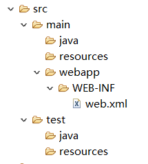
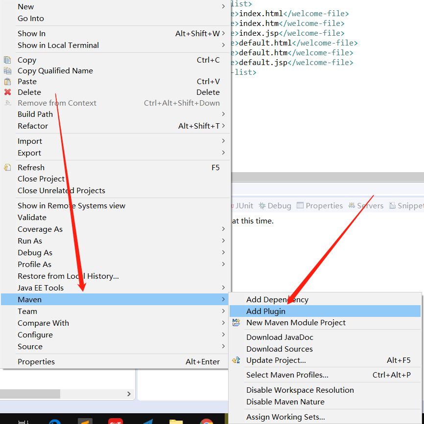
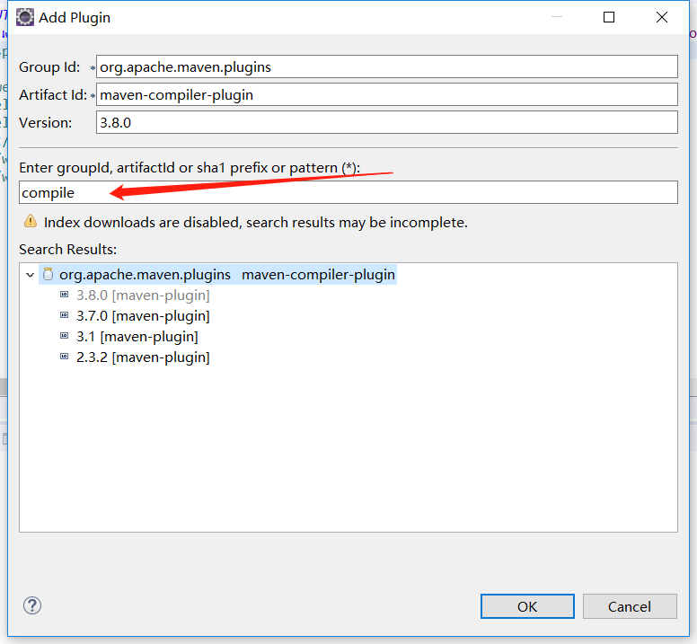
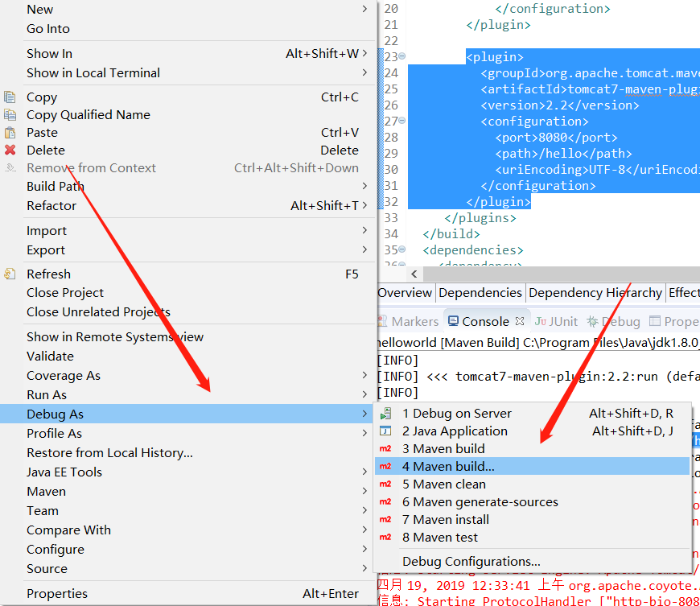
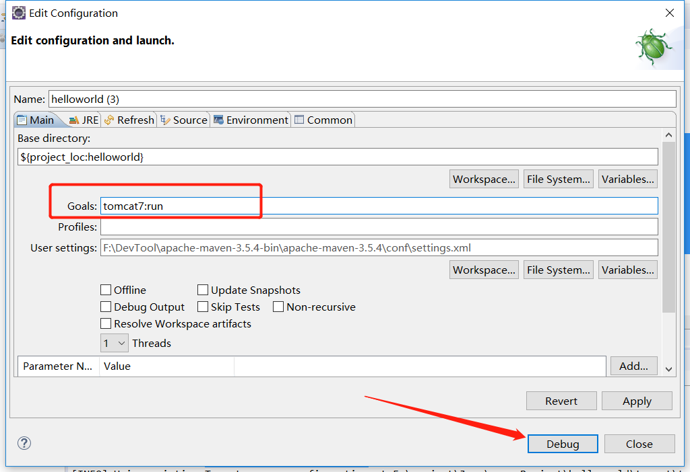

安装
下载安装包
配置环境变量MAVEN_HOME
- 修改系统环境变量PATH，加入%MAVEN_HOME%/bin;
注意：由于maven是使用Java开发的，因此其运行需要jre，因此必须安装jdk，然后配置环境变量JAVA_HOME
- 测试：在cmd中输入mvn -v查看maven版本
Maven工程目录

maven工程目录
- src/main/java 项目源代码
- src/main/resources 项目资源文件，比如Spring配置文件
- src/main/webapp web项目必备
maven命令
- mvn compile 编译src/main中的源文件，输出到target目录下
- mvn clean 清除target目录
- mvn test 编译src/main中的源文件，编译src/test中的测试类并运行单元测试
- mvn pakage 将项目打包
- mvn install 将项目打包并发布到本地仓库
修改JDK版本
新建maven项目后默认是jre1.5
解决办法：
添加插件，修改pom.xml
- 步骤1

- 步骤2

- 步骤三，在pom.xml中添加jdk版本信息
<plugin>
<groupId>org.apache.maven.plugins</groupId>
<artifactId>maven-compiler-plugin</artifactId>
<version>3.8.0</version>
<configuration>
<!-- 源码版本 -->
<source>1.8</source>
<!-- 编译目标版本 -->
<target>1.8</target>
<!-- 指定编码 -->
<encoding>utf-8</encoding>
</configuration>
</plugin>配置完之后可能工程还是jre1.5，这时只需要maven update一下即可
依赖的作用范围
通过
eg:
<dependency> |
取值：
compile 依赖会用在编译，测试，运行
provided 依赖只有在当JDK或者一个容器已经提供该依赖时使用。provided依赖在编译和测试时需要，在运行时不需要，比如servlet api ，tomcat容器已经提供该jar包
runtime 依赖在运行和测试系统时候需要，但在编译的时候不需要。比如：jdbc的驱动包
test 依赖在编译和运行的时候都不需要，只有在测试编译和测试运行阶段可用，比如junit
使用Maven tomcat 插件运行项目
配置插件
<plugin> |
右键点击项目

maven-tomcat插件
运行命令

运行命令